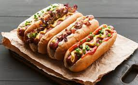

HOT DOGS

When the kids need a break from sandwiches, why not send them with a hot hot dog to warm their bellies before going out to play?
Ingredients
- 1 all-beef hot dog
- 1 hot dog bun
- 1 packet ketchup
- 1 packet prepared yellow mustard
- 2 tablespoons shredded Cheddar cheese
Directions
- Prepare your child's lunch box by packing the hot dog bun, ketchup, mustard and Cheddar cheese.
- Preheat your child's insulated beverage container by filling with boiling water. Let stand for 15 to 20 minutes. I put the kettle on when I get up and let it heat while the kids get ready for school. Right before they leave, dump out that water and replace with more boiling water. The preheating keeps it hot for a longer time. Place a hot dog into the water and close the lid.
- When your child is ready for lunch, they can take the hot hot dog out of the container and place it on the bun. Top with ketchup, mustard and cheese to make a hot lunch from home./li>